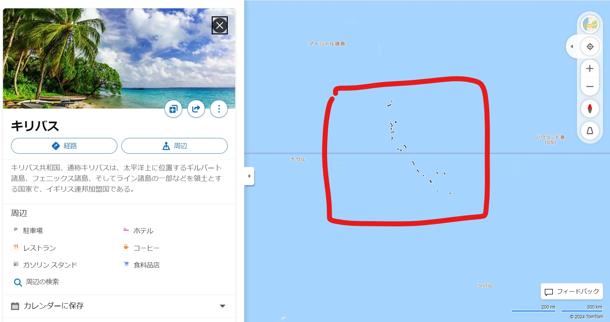
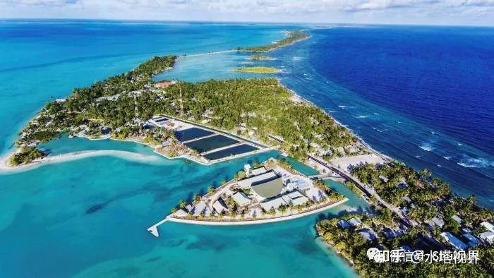
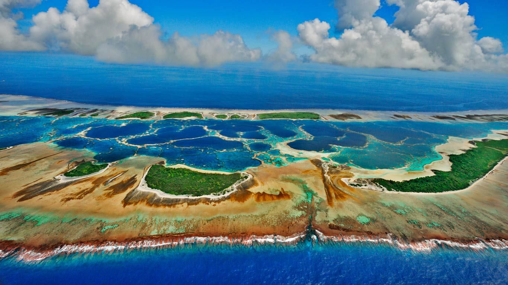
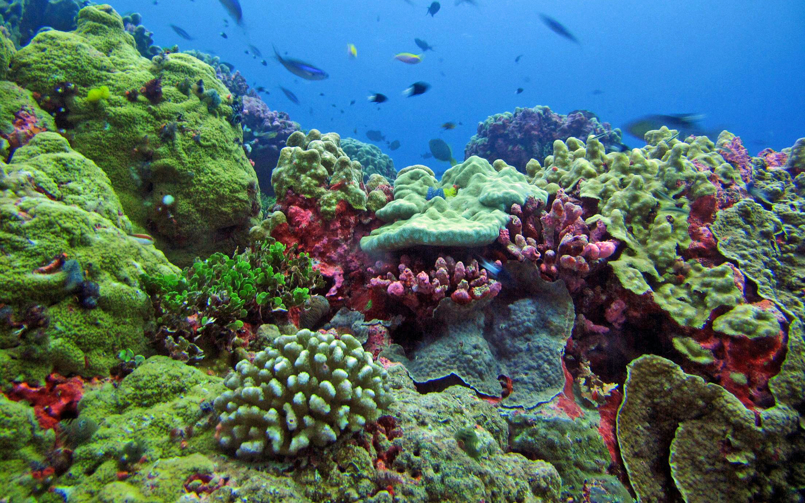
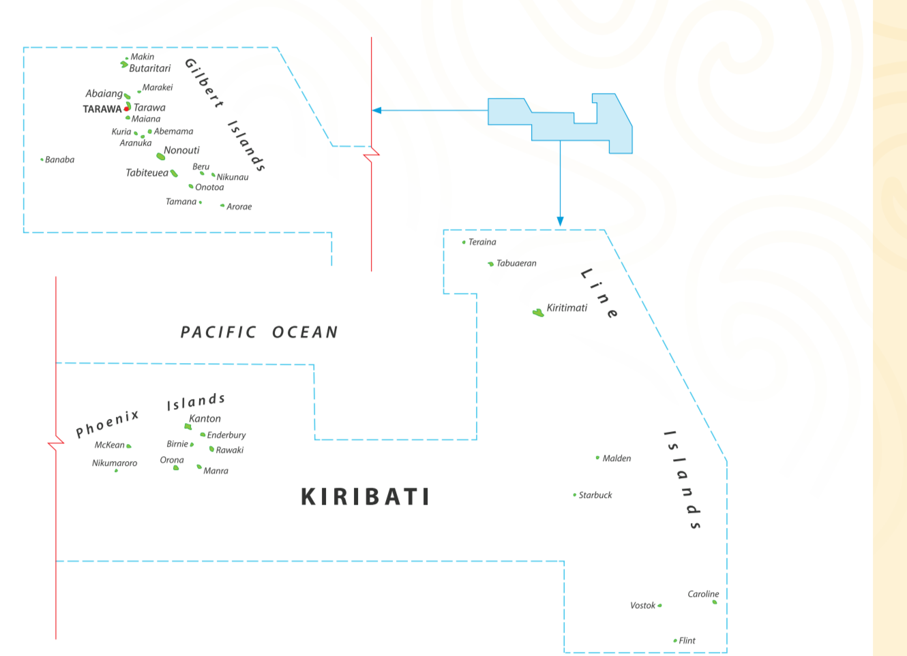
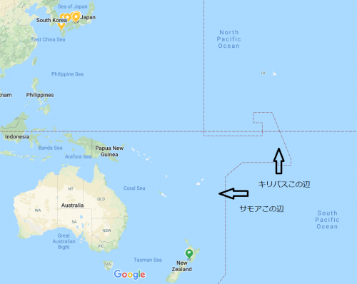
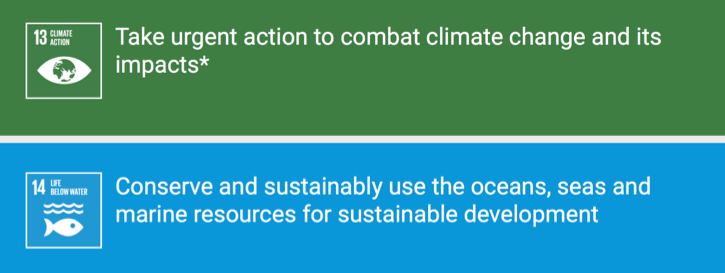

キリバスは中部太平洋に位置する島国で、赤道から南に約4,000キロメートルの位置にあります。インターナショナル・デート・ラインにより東西に分断され、西半分はギルバート諸島、中央部から東はライン諸島として知られています。
キリバスは33の環礁と島々から成る国で、首都タラワは主要な都市であり、経済的・政治的な中心地です。
↑キリバス首都の上からの眺め
↑キリバスの環礁
キリバスの人々は海洋資源に依存しており、伝統的な漁業が生活の重要な一部を占めています。また、環礁の土地の豊かさと限られた資源を保護し、持続可能な方法で利用することが求められています。気候変動による海面上昇は深刻な問題であり、自然環境との調和を保つための課題に直面しています。
キリバスの環礁はそれぞれが海洋に囲まれており、地理的な分離と依存が顕著です。島々間の交通は航空や船舶に依存しており、物流や情報の流れが重要な役割を果たしています。外部からの支援と経済的つながりも、国の存続にとって不可欠です。
キリバスの地域的特徴は何といってもハッピーニューイヤーを迎えられるのが早い国です。お年玉を早くもらいたい人はキリバスまで親戚の人と行くことで誰よりも早くお年玉をもらうことができます。
キリバスは持続可能な開発目標SDGsの達成に向けた取り組みを行っており、特に気候変動や海洋保護に関する取り組みが重要です。
